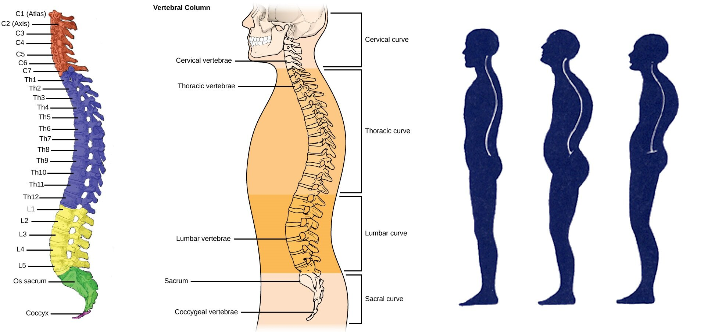

Perfect Posture
25 March 2016
Whether dancing Latin or Standard, posture is one of the most important thing for beginners to learn, and needs to be maintained throughout every dance. Especially in Standard, posture (along with frame) is the most important aspect of a couple's dancing even at the Gold level. Good posture can change your look entirely, make you have more presence and confidence, and improve balance and partnering. Unfortunately, in today's world of looking down at your cellphone, most people have poorer posture than ever, but don't give up hope! There are many things that can be done to improve posture and improve your results.
The Spine
The Spine is divided into five sections. From bottom to top, these are the coccyx, the sacrum, the lumbar spine, the thoracic spine, and the cervical spine. The coccyx and the sacrum are fused into a single bone that can't move, so those sections of the spine are not important for our discussion today. The lumbar spine is in the lower back, the thoracic spine runs from about your lower ribs to the bottom of your neck, and the cervical spine runs through the rest of your neck, ending right below your ears. You will notice the lumbar spine naturally curves back, the thoracic spine naturally curves forward, and the cervical spine naturally curves back again, all in a big wave pattern. Normal, relaxed posture contains this curvature naturally, bad posture exaggerates this normal curve and leads to the appearance of a collapsed spine, but dance posture is characterised by having a stretched spine with lengthened curves, causing you to look taller and projected upward.
In order to stretch the spine into dance posture, we need to go beyond good posture. Try to lengthen each of the three mobile curves of the back. Pull the belly button in toward the spine and fill out the lower back. Lift the collarbone and try to stretch the curve of the thoracic spine, and let the head sit back on the shoulders so that half lies in front of the shoulders and half lies behind it. Many people think their necks are too far forward, but often the problem isn't in the neck, it is in the thoracic spine. If the thoracic spine is too curved, the neck will begin already at an angle, and no amount of straightening will fix it. Each of these three sections of the spine need to be lengthened in order to have a good posture.
The Muscles
The spine is just a long column of bone, and it can't really do anything on its own. In order to achieve the correct position of the spine, we need to use the right muscles. Certain muscles need to be engaged to get you into good posture, and certain muscles need to be stretched so they don't hold you in bad posture.
The erector spinae muscles (Latin for lifter-upper of the spine) run up and down the back, connecting the vertebrae and the ribs from top to down. They are kind of like the string of a bow - when they tighten, the bow flexes. In this case, since they are on your back, when they tighten, your chest will expand and the curve in your thoracic spine will decrease. These are the main muscles to extend your thoracic spine and have an upright posture.
The other muscle to engage is the transverse abdominis (Latin for runs across the belly). This muscle is the deepest abdominal muscle. It is a sheet of muscle that lies beneath all the other abdominal muscles, and when it contracts it squeezes around your abdomen. You engage this muscle by feeling that you pull your belly button in and narrow your entire abdomen from all sides, like you're wearing a tight belt. The feeling should cause your upper spine to extend and grow and your hips to push downward, like how squeezing a tube of toothpaste in the center fills out both sides. Engaging the transverse abdominis will also anchor your lower ribs down, so you don't over extend your lower back and look as if you're pushing out your stomach.
While engaging the right muscles is crucial for attaining a good posture, stretching and lengthening the right muscles is equally important. The rectus abdominis (Latin for lifter of the belly) is one that can get tight on a lot of people, especially those who work out. This muscle is commonly known as your six pack, and is often used for crunches and sit ups. It connects from the front of your pelvis up to the bottom of your chest. When this muscle gets too tight, it doesn't allow for correct lifting of the rib cage, and can cause the front of the body to look collapsed in a permanent crunch position.
The pectoralis major and minor muscles (Latin for bigger and smaller muscles of the chest) can also be problematic, especially for guys who bench press. These muscles connect the arms to the middle of the chest, and when they get tight, they can cause the chest to cave inward, and inhibit spreading of the chest and collarbone.
Exercises
Transverse Abdominis (Strengthen)

Pretty much every Pilates and Gyrotonic exercise is geared toward strengthening the deep abdominal muscles, such as the transverse abdominis. One easy to do exercise is flutter kicks. Lie on your back with your hands at your side (or under your sacrum, as depicted below, to cushion it from the hard floor), and kick your legs up and down at a moderate pace, with your knees straight, all the while thinking about pulling your belly button as far down toward your spine as possible. This last part is key - make sure you sink the belly button to the floor in order to use the transverse abdominis, and not the rectus abdominis (which we want to stretch).
Erector Spinae (Strengthen)
To strengthen these muscles, lie on your stomach with your hands at your side. Practice peeling the chest off the floor by first lifting the head, then the back of the neck, then one vertebra at a time until only your bottom ribs are on the ground. Make sure to keep the back of your neck and your lower back long. This exercise should extend the thoracic spine, not the cervical spine or the lumbar spine. To add a layer of difficulty, try this while lying on a large exercise ball. If you feel this in your lower back, you are doing it wrong - keep the lower back long, and extend only the upper back.
Rectus Abdominis (Stretch)
The Yoga Cobra Pose stretches the rectus abdominis very well. Lie flat on your stomach with your palms down at the height of your lower ribs. From there, push the hands forward and into the ground and stretch the body up, looking toward the ceiling. You should achieve a smooth curve throughout the spine, and not a deep curve only in the lower back.
Pectoralis Major and Minor (Stretch)
To stretch the pecs, put your arm on a wall and turn your chest away from it. Adjust the height of your arm from shoulder height, to slightly below or slightly above shoulder height to stretch different parts of the muscle group. Do not let your shoulder pop forward - keep the shoulder down and back.
Standard Posture for the Lady
This article is about posture in all forms of Ballroom Dancing, but in Standard, the Lady's posture is exaggerated. In order to achieve this exaggeration, all the principles covered in this article remain true, but they must be performed to a greater degree. All sections of the spine must be extended further, certain muscles must be held even more strongly, and certain muscles must be stretched even further. Moreover, the Lady's spine is always shifted slightly to her left, which needs to be maintained throughout. Take a look at this picture of Edita Daniute dancing a Throwaway Oversway.
Notice that her spine is extended (erector spinae), and yet it is not compressed in the lower back or the neck. Notice that she spreads the chest (pectoralis major and minor) and stretches through her entire front (rectus abdominis), while maintaining a structured core (transverse abdominis). Mastery of good posture comes when you can make it look effortless, like Edita. As you practice and emulate her, keep in mind the fundamentals discussed in this article.